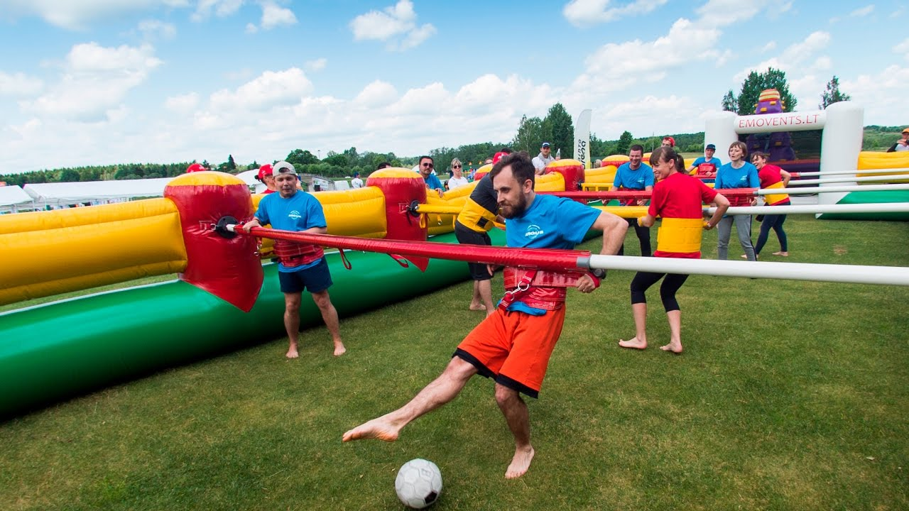

futbolas
LaLiga 2020/2021 livescore - Futbolas, Ispanija | Livescore.in

LaLiga 2020/2021 - Futbolas, Ispanija
reklama reklama reklama Atgal: Lietuvių English/International Deutsch Italiano Español Français Polski Čeština Slovenčina Dansk Română Türkçe Hrvatski Magyar Suomi Nederlands Português Português/Brasil Русский Ελληνικά Svenska Norsk Slovenščina Srpski Bahasa Indonesia Bahasa Melayu Tiếng Việt 한국어 Български език Українська Futbolas Tenisas Krepšinis Ledo Ritulys Beisbolas Am. futbolas Rankinis Daugiau sporto Kita Am. futbolas Austr. futbolas Autosportas Badmintonas Bandis Beisbolas Boksas Dviračių sportas Futbolas Futsal Golfas Kabaddi Krepšinis Kriketas Ledo Ritulys MMA Netbolas Papl. futbolas Papl. tinklinis Rankinis Regbio Lyga Regbis Smiginis Snukeris Stalo tenisas Suomių beisbolas Tenisas Tinklinis Vandensvydis eSports Žiemos sportas Žirgų lenktynės Žolės riedulys Žolės riedulys reklama reklama Nauji bet365 vartotojai dabar gali gauti iki 30 eurų premiją Minimalus įnašas yra 5 eurai ir tam, kad gautumėte premiją, turite vieną kartą įvykdyti nustatytus reikalavimus, į kuriuos įeina: minimalus statymo koeficientas, statymo suma ir nustatytas išmokėjimo metodas. Į potencialų laimėjimą nėra įskaičiuota premijos suma. Premijai taikomi laiko terminai bei papildomos sąlygos. 18+ bet365Futbolas Ispanija
LaLiga 2020/2021 Santrauka Rezultatai Tvarkaraštis Lentelė Archyvas Loading... Naujausi rezultatai Rodyti daugiau rungtynių results SA÷1¬~ZA÷ISPANIJA: LaLiga¬ZEE÷QVmLl54o¬ZB÷176¬ZY÷Ispanija¬ZC÷I58n6IRP¬ZD÷t¬ZE÷trCLzEsJ¬ZF÷0¬ZO÷0¬ZG÷1¬ZH÷176_QVmLl54o¬ZJ÷2¬ZL÷/lt/futbolas/ispanija/laliga/¬ZX÷00Ispanija 008panija0000000000001000LaLiga 006LaLiga000¬ZCC÷0¬ZAF÷Ispanija¬~AA÷tlHsHRKA¬AD÷1603742400¬ADE÷1603742400¬AB÷3¬CR÷3¬AC÷3¬CX÷Levantė¬ER÷7 etapas¬RW÷0¬AX÷1¬AO÷1603749070¬BX÷-1¬WQ÷¬WM÷LEV¬AE÷Levantė¬JA÷lvobuX9I¬WU÷levante¬AS÷0¬AZ÷0¬GRA÷0¬AG÷1¬BA÷0¬BC÷1¬WN÷CEL¬AF÷Celta Vigo¬JB÷SUq2viPO¬WV÷celta-vigo¬AS÷0¬AZ÷0¬GRB÷0¬AH÷1¬BB÷0¬BD÷1¬AM÷Namų rungtynės žaidžiamos kitame stadione.¬AW÷1¬~AA÷zBxHVQZ3¬AD÷1603656000¬ADE÷1603656000¬AB÷3¬CR÷3¬AC÷3¬CX÷Real Sociedad¬ER÷7 etapas¬RW÷0¬AX÷1¬AO÷1603662436¬BX÷-1¬WQ÷¬WM÷RSO¬AE÷Real Sociedad¬JA÷feK28Vw5¬WU÷real-sociedad¬AS÷1¬AZ÷1¬GRA÷0¬AG÷4¬BA÷1¬BC÷3¬WN÷HUE¬AF÷Huesca¬JB÷8bO67kgB¬WV÷huesca¬GRB÷0¬AH÷1¬BB÷0¬BD÷1¬AW÷1¬~AA÷xGAjF5kN¬AD÷1603647000¬ADE÷1603647000¬AB÷3¬CR÷3¬AC÷3¬CX÷Getafė¬ER÷7 etapas¬RW÷0¬AX÷1¬AO÷1603654066¬BX÷-1¬WQ÷¬WM÷GET¬AE÷Getafė¬JA÷xIYEcEPn¬WU÷getafe¬GRA÷0¬AG÷0¬BA÷0¬BC÷0¬WN÷GRA¬AF÷Granada CF¬JB÷jLxJdYvg¬WV÷granada¬AS÷2¬AZ÷2¬GRB÷0¬AH÷1¬BB÷1¬BD÷0¬AW÷1¬~AA÷fiLoGozH¬AD÷1603638000¬ADE÷1603638000¬AB÷3¬CR÷3¬AC÷3¬CX÷Cadiz CF¬ER÷7 etapas¬RW÷0¬AX÷1¬AO÷1603644870¬BX÷-1¬WQ÷¬WM÷CAD¬AE÷Cadiz CF¬JA÷tnmq3z2P¬WU÷kadizas¬AS÷0¬AZ÷0¬GRA÷0¬AG÷0¬BA÷0¬BC÷0¬WN÷VIL¬AF÷Vilarealis¬JB÷reZAbfAt¬WV÷villarreal¬AS÷0¬AZ÷0¬GRB÷0¬AH÷0¬BB÷0¬BD÷0¬AW÷1¬~AA÷QueQ83Sj¬AD÷1603630800¬ADE÷1603630800¬AB÷3¬CR÷3¬AC÷3¬CX÷Valjadolidas¬ER÷7 etapas¬RW÷0¬AX÷1¬AO÷1603637701¬BX÷-1¬WQ÷¬WM÷VLL¬AE÷Valjadolidas¬JA÷QLwwhAgO¬WU÷valladolid¬AJ÷1¬GRA÷0¬AG÷0¬BA÷0¬BC÷0¬WN÷ALA¬AF÷Alaves¬JB÷xdssiU8U¬WV÷alaves¬AS÷2¬AZ÷2¬GRB÷0¬AH÷2¬BB÷0¬BD÷2¬AW÷1¬~AA÷SpZ8Xn5i¬AD÷1603566000¬ADE÷1603566000¬AB÷3¬CR÷3¬AC÷3¬CX÷Atl. Madridas¬ER÷7 etapas¬RW÷0¬AX÷1¬AO÷1603572688¬BX÷-1¬WQ÷¬WM÷MAD¬AE÷Atl. Madridas¬JA÷EHInCDvt¬WU÷atl-madrid¬AS÷1¬AZ÷1¬GRA÷0¬AG÷2¬BA÷0¬BC÷2¬WN÷BET¬AF÷Betis¬JB÷h8HjBXgn¬WV÷betis¬AK÷1¬GRB÷0¬AH÷0¬BB÷0¬BD÷0¬AW÷1¬~AA÷nRHwI754¬AD÷1603557000¬ADE÷1603557000¬AB÷3¬CR÷3¬AC÷3¬CX÷Osasuna¬ER÷7 etapas¬RW÷0¬AX÷1¬AO÷1603563895¬BX÷-1¬WQ÷¬WN÷BIL¬AF÷At. Bilbao¬JB÷fHoftDfC¬WV÷ath-bilbao¬GRB÷0¬AH÷0¬BB÷0¬BD÷0¬WM÷OSA¬AE÷Osasuna¬JA÷tEsjsgu6¬WU÷osasuna¬AS÷1¬AZ÷1¬GRA÷0¬AG÷1¬BA÷0¬BC÷1¬AW÷1¬~AA÷tlwDW6Kc¬AD÷1603557000¬ADE÷1603557000¬AB÷3¬CR÷3¬AC÷3¬CX÷Sevilija¬ER÷7 etapas¬RW÷0¬AX÷1¬AO÷1603563838¬BX÷-1¬WQ÷¬WM÷SEV¬AE÷Sevilija¬JA÷MsMfAi9h¬WU÷sevilla¬GRA÷0¬AG÷0¬BA÷0¬BC÷0¬WN÷EIB¬AF÷Eibar¬JB÷0YKb9BOb¬WV÷eibar¬AS÷2¬AZ÷2¬GRB÷0¬AH÷1¬BB÷1¬BD÷0¬AW÷1¬~AA÷nkdM9qDp¬AD÷1603548000¬ADE÷1603548000¬AB÷3¬CR÷3¬AC÷3¬CX÷Barselona¬ER÷7 etapas¬RW÷0¬AX÷1¬AO÷1603554882¬BX÷-1¬WQ÷¬WM÷BAR¬AE÷Barselona¬JA÷h8uVgWOB¬WU÷barcelona¬GRA÷0¬AG÷1¬BA÷1¬BC÷0¬WN÷RMA¬AF÷Real Madrid¬JB÷WbvZhjvI¬WV÷real-madrid¬AS÷2¬AZ÷2¬GRB÷0¬AH÷3¬BB÷1¬BD÷2¬AW÷1¬~AA÷G69fEP4T¬AD÷1603479600¬ADE÷1603479600¬AB÷3¬CR÷3¬AC÷3¬CX÷Elche¬ER÷7 etapas¬RW÷0¬AX÷1¬AO÷1603486364¬BX÷-1¬WQ÷¬WM÷ELC¬AE÷Elche¬JA÷prxNehfa¬WU÷elche¬AS÷1¬AZ÷1¬GRA÷0¬AG÷2¬BA÷2¬BC÷0¬WN÷VAL¬AF÷Valencija¬JB÷OYzRfC95¬WV÷valencija¬GRB÷0¬AH÷1¬BB÷0¬BD÷1¬AW÷1¬~AA÷ld9FDhEI¬AD÷1603047600¬ADE÷1603047600¬AB÷3¬CR÷3¬AC÷3¬CX÷Betis¬ER÷6 etapas¬RW÷0¬AX÷1¬AO÷1603054455¬BX÷-1¬WQ÷¬WM÷BET¬AE÷Betis¬JA÷SpOtFzdD¬WU÷betis¬GRA÷0¬AG÷0¬BA÷0¬BC÷0¬WN÷RSO¬AF÷Real Sociedad¬JB÷tlCOwKYD¬WV÷real-sociedad¬AS÷2¬AZ÷2¬GRB÷0¬AH÷3¬BB÷1¬BD÷2¬AW÷1¬~AA÷xhSgIGam¬AD÷1603038600¬ADE÷1603038600¬AB÷3¬CR÷3¬AC÷3¬CX÷Alaves¬ER÷6 etapas¬RW÷0¬AX÷1¬AO÷1603045550¬BX÷-1¬WQ÷¬WM÷ALA¬AE÷Alaves¬JA÷Mgp0Fqjd¬WU÷alaves¬GRA÷0¬AG÷0¬BA÷0¬BC÷0¬WN÷ELC¬AF÷Elche¬JB÷A9wrvTSd¬WV÷elche¬AS÷2¬AZ÷2¬GRB÷0¬AH÷2¬BB÷1¬BD÷1¬AW÷1¬~AA÷OlOkJdps¬AD÷1603038600¬ADE÷1603038600¬AB÷3¬CR÷3¬AC÷3¬CX÷Huesca¬ER÷6 etapas¬RW÷0¬AX÷1¬AO÷1603045103¬BX÷-1¬WQ÷¬WM÷HUE¬AE÷Huesca¬JA÷ltnhH5Lq¬WU÷huesca¬AS÷0¬AZ÷0¬GRA÷0¬AG÷2¬BA÷0¬BC÷2¬WN÷VLL¬AF÷Valjadolidas¬JB÷r3odGPzj¬WV÷valladolid¬AS÷0¬AZ÷0¬GRB÷0¬AH÷2¬BB÷1¬BD÷1¬AW÷1¬~AA÷6XJAEYbC¬AD÷1603029600¬ADE÷1603029600¬AB÷3¬CR÷3¬AC÷3¬CX÷Vilarealis¬ER÷6 etapas¬RW÷0¬AX÷1¬AO÷1603036443¬BX÷-1¬WQ÷¬WM÷VIL¬AE÷Vilarealis¬JA÷KKKYGdR0¬WU÷villarreal¬AS÷1¬AZ÷1¬AJ÷1¬GRA÷0¬AG÷2¬BA÷1¬BC÷1¬WN÷VAL¬AF÷Valencija¬JB÷EsKxGGt7¬WV÷valencija¬GRB÷0¬AH÷1¬BB÷1¬BD÷0¬AW÷1¬~AA÷b7G2GfUa¬AD÷1603022400¬ADE÷1603022400¬AB÷3¬CR÷3¬AC÷3¬CX÷At. Bilbao¬ER÷6 etapas¬RW÷0¬AX÷1¬AO÷1603029241¬BX÷-1¬WQ÷¬WM÷BIL¬AE÷At. Bilbao¬JA÷t8fgyRCF¬WU÷ath-bilbao¬AS÷1¬AZ÷1¬GRA÷0¬AG÷2¬BA÷0¬BC÷2¬WN÷LEV¬AF÷Levantė¬JB÷Y3IMJbsr¬WV÷levante¬GRB÷0¬AH÷0¬BB÷0¬BD÷0¬AW÷1¬~AA÷jaOUJTzh¬AD÷1603015200¬ADE÷1603015200¬AB÷3¬CR÷3¬AC÷3¬CX÷Eibar¬ER÷6 etapas¬RW÷0¬AX÷1¬AO÷1603021868¬BX÷-1¬WQ÷¬WM÷EIB¬AE÷Eibar¬JA÷0ztzoyts¬WU÷eibar¬AS÷0¬AZ÷0¬GRA÷0¬AG÷0¬BA÷0¬BC÷0¬WN÷OSA¬AF÷Osasuna¬JB÷vRvvpeem¬WV÷osasuna¬AS÷0¬AZ÷0¬AK÷1¬GRB÷0¬AH÷0¬BB÷0¬BD÷0¬AW÷1¬~AA÷8zJZImjb¬AD÷1602961200¬ADE÷1602961200¬AB÷3¬CR÷3¬AC÷3¬CX÷Getafė¬ER÷6 etapas¬RW÷0¬AX÷1¬AO÷1602968012¬BX÷-1¬WQ÷¬WM÷GET¬AE÷Getafė¬JA÷80qrqFAg¬WU÷getafe¬AS÷1¬AZ÷1¬GRA÷0¬AG÷1¬BA÷0¬BC÷1¬WN÷BAR¬AF÷Barselona¬JB÷nirnrZPa¬WV÷barcelona¬GRB÷0¬AH÷0¬BB÷0¬BD÷0¬AW÷1¬~AA÷KGHbHzFg¬AD÷1602952200¬ADE÷1602952200¬AB÷3¬CR÷3¬AC÷3¬CX÷Real Madrid¬ER÷6 etapas¬RW÷0¬AX÷1¬AO÷1602959130¬BX÷-1¬WQ÷¬WM÷RMA¬AE÷Real Madrid¬JA÷l0xnwmr3¬WU÷real-madrid¬GRA÷0¬AG÷0¬BA÷0¬BC÷0¬WN÷CAD¬AF÷Cadiz CF¬JB÷rNyjx7c9¬WV÷kadizas¬AS÷2¬AZ÷2¬GRB÷0¬AH÷1¬BB÷1¬BD÷0¬AW÷1¬~AA÷C8PQK9Lo¬AD÷1602943200¬ADE÷1602943200¬AB÷3¬CR÷3¬AC÷3¬CX÷Celta Vigo¬ER÷6 etapas¬RW÷0¬AX÷1¬AO÷1602950094¬BX÷-1¬WQ÷¬WM÷CEL¬AE÷Celta Vigo¬JA÷WKk4jcIJ¬WU÷celta-vigo¬GRA÷0¬AG÷0¬BA÷0¬BC÷0¬WN÷MAD¬AF÷Atl. Madridas¬JB÷reg8kHXP¬WV÷atl-madrid¬AS÷2¬AZ÷2¬GRB÷0¬AH÷2¬BB÷1¬BD÷1¬AW÷1¬~AA÷69yONxxQ¬AD÷1602932400¬ADE÷1602932400¬AB÷3¬CR÷3¬AC÷3¬CX÷Granada CF¬ER÷6 etapas¬RW÷0¬AX÷1¬AO÷1602939362¬BX÷-1¬WQ÷¬WN÷SEV¬AF÷Sevilija¬JB÷CKfQLoDS¬WV÷sevilla¬AK÷1¬GRB÷0¬AH÷0¬BB÷0¬BD÷0¬WM÷GRA¬AE÷Granada CF¬JA÷IceMMRcM¬WU÷granada¬AS÷1¬AZ÷1¬GRA÷0¬AG÷1¬BA÷0¬BC÷1¬AW÷1¬~ 63 Tvarkaraštis Rodyti daugiau rungtynių fixtures SA÷1¬~ZA÷ISPANIJA: LaLiga¬ZEE÷QVmLl54o¬ZB÷176¬ZY÷Ispanija¬ZC÷I58n6IRP¬ZD÷t¬ZE÷trCLzEsJ¬ZF÷0¬ZO÷0¬ZG÷1¬ZH÷176_QVmLl54o¬ZJ÷2¬ZL÷/lt/futbolas/ispanija/laliga/¬ZX÷00Ispanija 008panija0000000000001000LaLiga 006LaLiga000¬ZCC÷0¬ZAF÷Ispanija¬~AA÷n9O7LtCd¬AD÷1604088000¬ADE÷1604088000¬AB÷1¬CR÷1¬AC÷1¬CX÷Eibar¬ER÷8 etapas¬RW÷0¬AX÷0¬BX÷-1¬WQ÷¬WN÷CAD¬AF÷Cadiz CF¬JB÷MPtRabi2¬WV÷kadizas¬GRB÷0¬WM÷EIB¬AE÷Eibar¬JA÷rZsN0vxd¬WU÷eibar¬GRA÷0¬AL÷{ 2 :[{ BU : \/lt\/bookmaker\/16\/?from=live-streaming&sport=0 , IU : \/res\/image\/data\/bookmakers\/17-16.png , BN : bet365 , BI :16, BT : GEO restrictions apply. Funded account required or to have placed a bet in the last 24 hours. GamblingTherapy.org. 18+ }]}¬AW÷1¬AN÷n¬~AA÷ATUTSOJM¬AD÷1604149200¬ADE÷1604149200¬AB÷1¬CR÷1¬AC÷1¬CX÷Real Madrid¬ER÷8 etapas¬RW÷0¬AX÷0¬BX÷-1¬WQ÷¬WN÷HUE¬AF÷Huesca¬JB÷h8yYAOa3¬WV÷huesca¬GRB÷0¬WM÷RMA¬AE÷Real Madrid¬JA÷v5XTB4pc¬WU÷real-madrid¬GRA÷0¬AL÷{ 2 :[{ BU : \/lt\/bookmaker\/16\/?from=live-streaming&sport=0 , IU : \/res\/image\/data\/bookmakers\/17-16.png , BN : bet365 , BI :16, BT : GEO restrictions apply. Funded account required or to have placed a bet in the last 24 hours. GamblingTherapy.org. 18+ }]}¬AW÷1¬AN÷n¬~AA÷zPHkpQlc¬AD÷1604157300¬ADE÷1604157300¬AB÷1¬CR÷1¬AC÷1¬CX÷At. Bilbao¬ER÷8 etapas¬RW÷0¬AX÷0¬BX÷-1¬WQ÷¬WN÷SEV¬AF÷Sevilija¬JB÷lWYCN1q9¬WV÷sevilla¬GRB÷0¬WM÷BIL¬AE÷At. Bilbao¬JA÷Auz9OsU2¬WU÷ath-bilbao¬GRA÷0¬AL÷{ 2 :[{ BU : \/lt\/bookmaker\/16\/?from=live-streaming&sport=0 , IU : \/res\/image\/data\/bookmakers\/17-16.png , BN : bet365 , BI :16, BT : GEO restrictions apply. Funded account required or to have placed a bet in the last 24 hours. GamblingTherapy.org. 18+ }]}¬AW÷1¬AN÷n¬~AA÷WxWPT44G¬AD÷1604165400¬ADE÷1604165400¬AB÷1¬CR÷1¬AC÷1¬CX÷Osasuna¬ER÷8 etapas¬RW÷0¬AX÷0¬BX÷-1¬WQ÷¬WN÷MAD¬AF÷Atl. Madridas¬JB÷Q1qnmL7d¬WV÷atl-madrid¬GRB÷0¬WM÷OSA¬AE÷Osasuna¬JA÷nBprl1hj¬WU÷osasuna¬GRA÷0¬AL÷{ 2 :[{ BU : \/lt\/bookmaker\/16\/?from=live-streaming&sport=0 , IU : \/res\/image\/data\/bookmakers\/17-16.png , BN : bet365 , BI :16, BT : GEO restrictions apply. Funded account required or to have placed a bet in the last 24 hours. GamblingTherapy.org. 18+ }]}¬AW÷1¬AN÷n¬~AA÷8IP3MMdj¬AD÷1604174400¬ADE÷1604174400¬AB÷1¬CR÷1¬AC÷1¬CX÷Alaves¬ER÷8 etapas¬RW÷0¬AX÷0¬BX÷-1¬WQ÷¬WN÷BAR¬AF÷Barselona¬JB÷lCrJ1KMk¬WV÷barcelona¬GRB÷0¬WM÷ALA¬AE÷Alaves¬JA÷jRPF207q¬WU÷alaves¬GRA÷0¬AL÷{ 2 :[{ BU : \/lt\/bookmaker\/16\/?from=live-streaming&sport=0 , IU : \/res\/image\/data\/bookmakers\/17-16.png , BN : bet365 , BI :16, BT : GEO restrictions apply. Funded account required or to have placed a bet in the last 24 hours. GamblingTherapy.org. 18+ }]}¬AW÷1¬AN÷n¬~AA÷dv6br4J9¬AD÷1604235600¬ADE÷1604235600¬AB÷1¬CR÷1¬AC÷1¬CX÷Betis¬ER÷8 etapas¬RW÷0¬AX÷0¬BX÷-1¬WQ÷¬WN÷ELC¬AF÷Elche¬JB÷hSNjGJyq¬WV÷elche¬GRB÷0¬WM÷BET¬AE÷Betis¬JA÷jJyPKaTR¬WU÷betis¬GRA÷0¬AL÷{ 2 :[{ BU : \/lt\/bookmaker\/16\/?from=live-streaming&sport=0 , IU : \/res\/image\/data\/bookmakers\/17-16.png , BN : bet365 , BI :16, BT : GEO restrictions apply. Funded account required or to have placed a bet in the last 24 hours. GamblingTherapy.org. 18+ }]}¬AW÷1¬AN÷n¬~AA÷E1yLUpkA¬AD÷1604242800¬ADE÷1604242800¬AB÷1¬CR÷1¬AC÷1¬CX÷Celta Vigo¬ER÷8 etapas¬RW÷0¬AX÷0¬BX÷-1¬WQ÷¬WM÷CEL¬AE÷Celta Vigo¬JA÷2LNA698H¬WU÷celta-vigo¬GRA÷0¬WN÷RSO¬AF÷Real Sociedad¬JB÷voovkswp¬WV÷real-sociedad¬GRB÷0¬AL÷{ 2 :[{ BU : \/lt\/bookmaker\/16\/?from=live-streaming&sport=0 , IU : \/res\/image\/data\/bookmakers\/17-16.png , BN : bet365 , BI :16, BT : GEO restrictions apply. Funded account required or to have placed a bet in the last 24 hours. GamblingTherapy.org. 18+ }]}¬AW÷1¬AN÷n¬~AA÷EFGgqp43¬AD÷1604251800¬ADE÷1604251800¬AB÷1¬CR÷1¬AC÷1¬CX÷Granada CF¬ER÷8 etapas¬RW÷0¬AX÷0¬BX÷-1¬WQ÷¬WN÷LEV¬AF÷Levantė¬JB÷ddxLLuEL¬WV÷levante¬GRB÷0¬WM÷GRA¬AE÷Granada CF¬JA÷rgYGMLbF¬WU÷granada¬GRA÷0¬AL÷{ 2 :[{ BU : \/lt\/bookmaker\/16\/?from=live-streaming&sport=0 , IU : \/res\/image\/data\/bookmakers\/17-16.png , BN : bet365 , BI :16, BT : GEO restrictions apply. Funded account required or to have placed a bet in the last 24 hours. GamblingTherapy.org. 18+ }]}¬AW÷1¬AN÷n¬~AA÷4jUXRrZS¬AD÷1604260800¬ADE÷1604260800¬AB÷1¬CR÷1¬AC÷1¬CX÷Valencija¬ER÷8 etapas¬RW÷0¬AX÷0¬BX÷-1¬WQ÷¬WN÷GET¬AF÷Getafė¬JB÷QLZu92UF¬WV÷getafe¬GRB÷0¬WM÷VAL¬AE÷Valencija¬JA÷nVzxArF9¬WU÷valencija¬GRA÷0¬AL÷{ 2 :[{ BU : \/lt\/bookmaker\/16\/?from=live-streaming&sport=0 , IU : \/res\/image\/data\/bookmakers\/17-16.png , BN : bet365 , BI :16, BT : GEO restrictions apply. Funded account required or to have placed a bet in the last 24 hours. GamblingTherapy.org. 18+ }]}¬AW÷1¬AN÷n¬~AA÷QgzaN2sp¬AD÷1604347200¬ADE÷1604347200¬AB÷1¬CR÷1¬AC÷1¬CX÷Vilarealis¬ER÷8 etapas¬RW÷0¬AX÷0¬BX÷-1¬WQ÷¬WN÷VLL¬AF÷Valjadolidas¬JB÷Yowl7taS¬WV÷valladolid¬GRB÷0¬WM÷VIL¬AE÷Vilarealis¬JA÷fevp8MqM¬WU÷villarreal¬GRA÷0¬AW÷1¬AN÷n¬~AA÷8bqlszdU¬AD÷1604692800¬ADE÷1604692800¬AB÷1¬CR÷1¬AC÷1¬CX÷Elche¬ER÷9 etapas¬RW÷0¬AX÷0¬BX÷-1¬WQ÷¬WN÷CEL¬AF÷Celta Vigo¬JB÷GGZrtJoh¬WV÷celta-vigo¬GRB÷0¬WM÷ELC¬AE÷Elche¬JA÷8jzusaWo¬WU÷elche¬GRA÷0¬AW÷1¬AN÷n¬~AA÷WGfKmKCn¬AD÷1604754000¬ADE÷1604754000¬AB÷1¬CR÷1¬AC÷1¬CX÷Huesca¬ER÷9 etapas¬RW÷0¬AX÷0¬BX÷-1¬WQ÷¬WN÷EIB¬AF÷Eibar¬JB÷tpClRkLI¬WV÷eibar¬GRB÷0¬WM÷HUE¬AE÷Huesca¬JA÷nNCpSV5C¬WU÷huesca¬GRA÷0¬AW÷1¬AN÷n¬~AA÷zo9lgtkP¬AD÷1604762100¬ADE÷1604762100¬AB÷1¬CR÷1¬AC÷1¬CX÷Barselona¬ER÷9 etapas¬RW÷0¬AX÷0¬BX÷-1¬WQ÷¬WN÷BET¬AF÷Betis¬JB÷06AYUXLg¬WV÷betis¬GRB÷0¬WM÷BAR¬AE÷Barselona¬JA÷htBUVD6m¬WU÷barcelona¬GRA÷0¬AW÷1¬AN÷n¬~AA÷46nXpId5¬AD÷1604770200¬ADE÷1604770200¬AB÷1¬CR÷1¬AC÷1¬CX÷Sevilija¬ER÷9 etapas¬RW÷0¬AX÷0¬BX÷-1¬WQ÷¬WN÷OSA¬AF÷Osasuna¬JB÷dU7DsB5a¬WV÷osasuna¬GRB÷0¬WM÷SEV¬AE÷Sevilija¬JA÷2789rijg¬WU÷sevilla¬GRA÷0¬AW÷1¬AN÷n¬~AA÷feuprGtO¬AD÷1604779200¬ADE÷1604779200¬AB÷1¬CR÷1¬AC÷1¬CX÷Atl. Madridas¬ER÷9 etapas¬RW÷0¬AX÷0¬BX÷-1¬WQ÷¬WN÷CAD¬AF÷Cadiz CF¬JB÷UayyruHu¬WV÷kadizas¬GRB÷0¬WM÷MAD¬AE÷Atl. Madridas¬JA÷jBDXxmKU¬WU÷atl-madrid¬GRA÷0¬AW÷1¬AN÷n¬~ 313 2020-2021 reklama reklama Pranešimų nustatymai Pranešimai yra blokuojami naršyklės Nustatymai Kallba: Lietuvių Tamsi versija Ispanija LaLiga 2-a LaLiga Antras Divizionas B - Pirma Grupė Antras Divizionas B - Antra Grupė Antras Divizionas B - Trečia Grupė Antras Divizionas B - Pirma Grupė Segunda Division B - Group 5 2-as divizionas B Nugalėtojų Atkrintamosios Varžybos 2-as divizionas B Pralaimėtojų atkrintamosios 2-as divizionas B Atkrintamosios Daugiau (27) 2-as divizionas B atkrintamosios 3-ias divizionas - 1-a grupė 3-ias divizionas - 2-a grupė 3-ias divizionas - 3-ia grupė 3-ias divizionas - 4-a grupė 3-ias divizionas - -5a grupė 3-ias divizionas - 6-a grupė 3-ias divizionas - 7-a grupė 3-ias divizionas - 8-a grupė 3-ias divizionas - 9-a grupė 3-ias divizionas - 10-a grupė 3-ias divizionas - 11-a grupė 3-ias divizionas - 12-a grupė 3-ias divizionas - 13-a grupė 3-ias divizionas - 14-a grupė 3-ias divizionas - 15-a grupė 3-ias divizionas - 16-a grupė 3-ias divizionas - 17-a grupė 3-ias divizionas - 18-a grupė 3-ias divizionas - atkrintamosios 3-ias divizionas - paaukštinimo atkrintamosios Copa del Rey Copa Federacion Super Taurė Primera divizionas (moterys) Copa de la Reina - moterys Moterų Super Taurė reklama Mano lygos reklama Šalys Airija Albanija Alžyras Andora Anglija Premier Lyga Čempionatas Pirma Lyga Antra Lyga EFL taurė FA Taurė Angola Argentina Armėnija Aruba Australija reklama Austrija Tipiko Bundės lyga Azerbaidžanas Bahreinas Baltarusija Bangladešas Belgija Jupilero Lyga Beninas Bermudai Bolivija Bosnija ir Hercegovina Botsvana Brazilija Serija A Daugiau Bulgarija Burkina Fasas Burundis DR Congo Danija Dominikos Respublika Dramblio Kaulo Krantas Džibutis Egiptas Ekvadoras Estija Etijopija Farerų Salos Fidžis Filipinai Gabonas Gambija Gana Gibraltaras Graikija Gruzija Gvatemala Gvinėja Haitis Hondūras Honkongas Indija Indonezija Irakas Iranas Islandija Ispanija LaLiga Copa del Rey Italija Serija A Serija B Italijos Taurė Izraelis JAV MLS Jamaika Japonija Jordanija Jungtiniai Arabų Emiratai Juodkalnija Kambodža Kamerūnas Kanada Kataras Kazachstanas Kenija Kinija Kipras Kirgiztanas Kiurasao Kolumbija Kongas Kosovas Kosta Rika Kroatija Kuveitas Laosas Latvija Lenkija Lesotas Libanas Liberija Libija Lichtenšteinas Lietuva A Lyga 1-a lyga Lietuvos Taurė Liuksemburgas Makao Malaizija Malavis Maldyvai Malis Malta Marokas Mauricijus Mauritanija Meksika Moldavija Mongolija Mozambikas Myanmaras Namibija Naujoji Zelandija Nigerija Nigeris Nikaragva Norvegija Olandija Eredivisie Oman Pakistanas Palestina Panama Paragvajus Peru Pietų Afrika Premier Lyga Pietų Korėja Portugalija Primeira Lyga Prancūzija Pirma Lyga Ruanda Rumunija Rusija Réunion Salvadoras San Marinas Saudo Arabija Senegalas Serbija Seychelles Siera Leone Singapūras Sirija Slovakija Slovėnija Somalia Sudan Suomija Svazilandas Tadžikistanas Tailandas Taivanas Tanzania Togas Trinidadas ir Tobagas Tunisas Turkija Turkmenistanas Uganda Ukraina Urugvajus Uzbekistanas Velsas Venesuela Vengrija Vietnamas Vokietija Bundeslyga Antra Bundeslyga Yemenas Zambija Zimbabvė Čekija Čilė Šiaurės Airija Šiaurės Makedonija Širi Lanka Škotija Švedija Šveicarija Žaliojo Kyšulio salos Kitos varžybos Afrika Afrikos Nacijų Taurė Pasaulio Čempionatas Australija ir Okeanija Pasaulio Čempionatas Azija Azijos taurė Pasaulio Čempionatas Europa Euro Čempionų Lyga Europos Lyga UEFA Nacijų lyga Europos Čempionatas iki 21 m. Europos Čempionatas iki 19 m. Pasaulio Čempionatas Europos Čempionatas iki 17 m. Pasaulis Pasaulio Čempionatas Olimpinės žaidynės U20 Pasaulio Taurė Pasaulio Čempionatas iki 17 m. Tarptautinis Draugiškas Draugiškos klubų varžybos Pietų Amerika Amerikos Taurė Libertadoreso Taurė Pasaulio Čempionatas Šiaurės ir Centrinė Amerika Auksinė Taurė Pasaulio Čempionatas Rodyti daugiau LIVESCORE.in Sąlygos Reklamuokis Kontaktai Rekomenduojamos svetainės Sekite mus Facebook Twitter Junkitės į darbalaukio versiją Junkitės į mobilią versiją Lažinkis atsakingai. Gambling Therapy . 18+ Copyright © 2008-20 LIVESCORE.in | Set privacyPosted by Jack  Read more
Read more  Comments (15)
Comments (15)  2020.10.29 06:22
2020.10.29 06:22